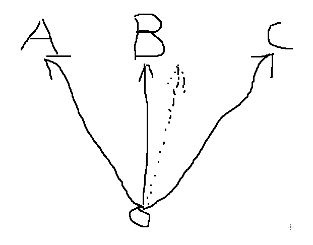
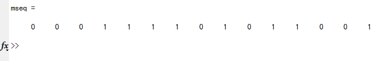
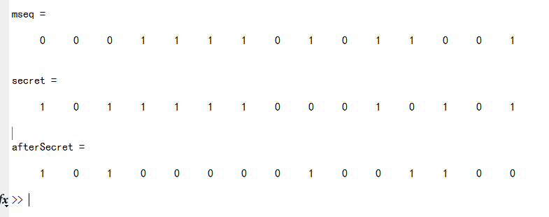
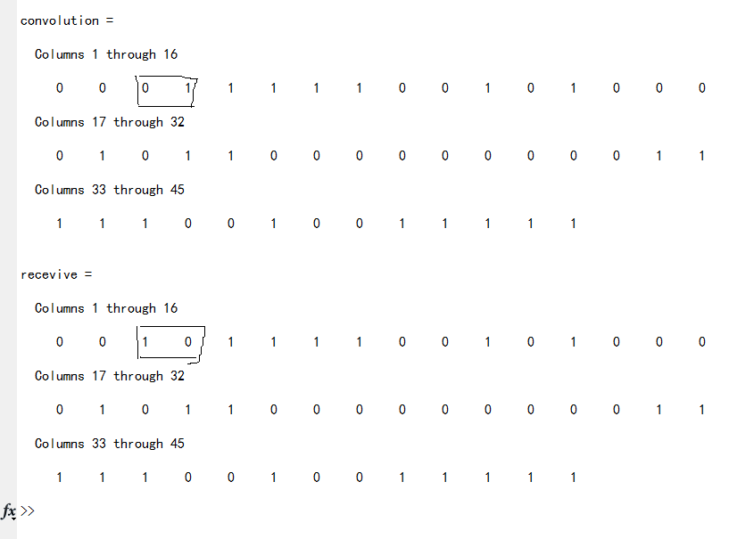
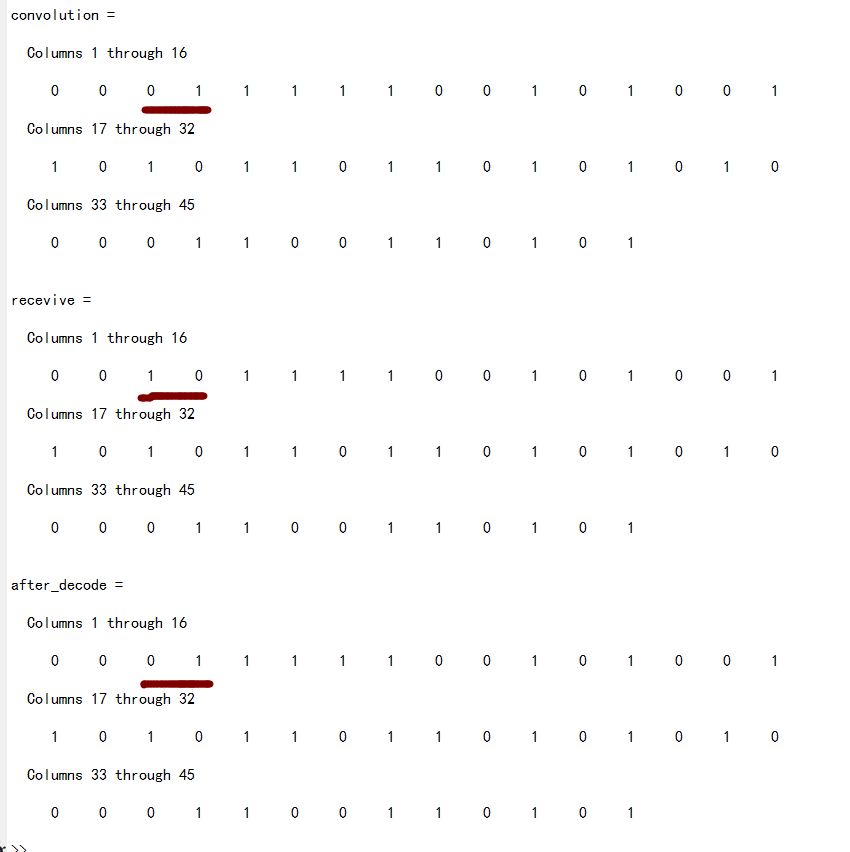
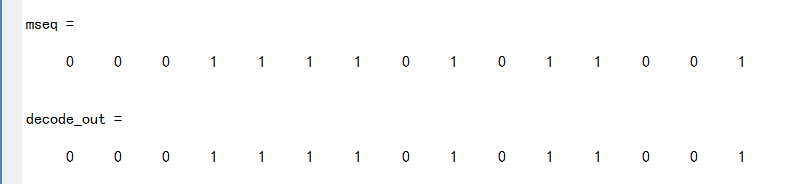

维特比算法的实现
前几天做通信原理的实验，发现网上关于维特比算法的解释太理论化，我结合代码通俗话的解释一下。如果看了以下代码您还是不能理解维特比纠错算法的真实目的，请务必联系我！
首先，我问大家一个问题，如下：  A，B，C代表三个地点，三条实线代表路径。假设张三现在要去A、B、C的其中一个地方，由于淘宝上买了一个劣质的指南针，方向出了偏差，虚线是他走过的路，我们不知道到底偏了多少。我们以上帝视觉猜测张三的目的，显然：看上去张三的目的地好像是B。如果我们信赖这个指南针(偏的并不离谱),那么我们的结论也许就是对的。
注意哦,我们的结论是根据最近的地点距离猜得，并不是非常准确，也就是说张三的目的地是A也是有可能的，即:指南针偏的的太多了
这里的”偏的太多了”，在通信上可以认为信息在传输过程受到了非常大的干扰，导致接收到的信息已经面目全非，想要恢复原有信息的话已经不太可能。
这就是维特比算法的一部分,根据汉明距离来选择最有可能通往下一个节点的路径。所以说，如果信息位错的太离谱了，它就不可靠了，这个不离谱是有一个度的，具体是多少，您可以参考下面的代码做个实验。
对了！如果您不知道什么是汉明距离，那么您可以直接关掉这个页面了。
好了，接下来我们来模拟一下整个信息传输过程,我默认您已经掌握了一定的原理，知道什么是M序列、卷积码等。
第一步：产生M序列
function [mseq] = m_sequence(fbconnection,register)
n=length(fbconnection);
N=2^n-1;
mseq(1)=register(n); %m序列的第一个输出码元
for i=2:N
newregister(1)=mod(sum(fbconnection.*register),2);
for j=2:n
newregister(j)=register(j-1);
end;
register=newregister;
mseq(i)=register(n);
end
其中fbconnection就是我们要发送的信息，它被认为是M序列的特征方程的阶次。
我们把它定义成函数，将这个文件命名为:createMsequence.m,在matlab中，输入：vector = createMsequence(…,…)就可以产生一个信息段对应的M序列。示列：
mes = [1 0 0 1]; %我们要发送的信息,我这里假设是4位，当然不论多少位都是可以的
init = [1,zeros(1,length(mes)-1)]; %寄存器初始值
mseq = createMsequence(mes,init); %调用之前我们写的代码
运行实例:

加密、卷积
我们先随机产生一个和M序列等长度的01码，我们把这个序列认为是密码子，也就是说接收方如果想要结算它接收到的信息，必须依靠这个密码子。
加密
secret = randint(1,length(mseq));
加密函数就简单点，直接异或吧。
mseq = bitxor(mseq,secret);
我们现在再来看一下差异。

卷积
然后我们再对这个序列进行卷积,我采用的是最简单的3,1,3卷积:
function [out] = conv(vector);
len = length(vector);
b1 = vector(1);
b2 = 0;
b3 = 0;
for i = 1 : len
c1 = b1;
c2 = xor(b1,b3);
c3 = xor(xor(b1,b2),b3);
out(3*(i-1) + 1) = c1;
out(3*(i-1) + 2) = c2;
out(3*(i-1) + 3) = c3;
b3 = b2 ;
b2 = b1 ;
if(i<len)
b1 = vector(i+1);
end
end
这是3,1,3卷积编码的实现，具体的实现框图我相信您肯定知道的，不难的，不就是一个迭代么。
信道传输
我们知道信号的传输过程受环境影响很大，有干扰的情况下很容易造成信息位错乱，其实就是抽样判决的时候导致的。
假设信号序列在传输过程中出错了，导致了某些位由原来的1->0,0->1，我们就令第3、4位吧。
convolution(3) = ~convolution(3);
convolution(4) = ~convolution(4);

第四步：接收、差错纠正
recevive = convolution;
decode_out = decode(recevive);
嘿嘿，全文的重点来了，维特比解码算法
这里我就直接贴代码了，相信我，如果您专心取理解每一行代码，肯定是看得懂的！
维特比算法的原理呢，如果您看不懂，结合下面的代码来看会有事半功倍的效果！
%MemeTao 2017.4.16
%维特比算法 仅支持(3,1,3)卷积码
%PS:请在调用前保证序列长度 >= 3*3 为什么? 这不是常识么？！
function [out] = receive(vector)
len = length(vector); %获取输入序列长度
if(mod(len,3) > 0)
disp('fuck you!'); %序列长度肯定是3的倍数，因为313卷积码嘛!
end
%下面我要开始初始化route了
%如果您看不懂下面的路径初始化,
%不用怀疑,绝对是没理解卷积码的逆向推导,请去看书
%a b c d 是状态
%aa ab bc ... 是路径
a = [0 0];
b = [0 1];
c = [1 0];
d = [1 1];
aa = [0 0 0];
ab = [1 1 1];
bc = [0 0 1];
bd = [1 1 0];
ca = [0 1 1];
cb = [1 0 0];
dc = [0 1 0];
dd = [1 0 1];
%你还是看不懂？ 那怎么办？下面更看不懂咯！ ^_^ ^_^
%按照理论,每一次仅存在8条路径，然后判决出4条幸存路径
%管他呢
route = cell(1,8);
route_survive = cell(1,4);
status = cell(1,8);
dis_cur = zeros(1,8);
dis_survive = zeros(1,8);
%--------------------------------8条路径+4条幸存-----------------------------------%
route{1} = [aa,aa,aa]; status{1} = a; dis_cur(1) = hanmingDis(route{1},vector(1:9));
route{2} = [ab,bc,ca]; status{2} = a; dis_cur(2) = hanmingDis(route{2},vector(1:9));
route{3} = [aa,aa,ab]; status{3} = b; dis_cur(3) = hanmingDis(route{3},vector(1:9));
route{4} = [ab,bc,cb]; status{4} = b; dis_cur(4) = hanmingDis(route{4},vector(1:9));
route{5} = [aa,ab,bc]; status{5} = c; dis_cur(5) = hanmingDis(route{5},vector(1:9));
route{6} = [ab,bd,dc]; status{6} = c; dis_cur(6) = hanmingDis(route{6},vector(1:9));
route{7} = [aa,ab,bd]; status{7} = d; dis_cur(7) = hanmingDis(route{7},vector(1:9));
route{8} = [ab,bd,dd]; status{8} = d; dis_cur(8) = hanmingDis(route{8},vector(1:9));
for i = 1 : 4
if( dis_cur(2*i-1) <= dis_cur(2*i) )
route_survive{i} = route{2*i-1};
dis_survive(i) = dis_cur(2*i-1);
else
route_survive{i} = route{2*i};
dis_survive(i) = dis_cur(2*i);
end
end
for index = 10 : 3 : len
%重新产生八条路径
%case a 状态A,下同
route {1} = [route_survive{1},aa]; %增加一条a-a路径
dis_cur(1) = dis_survive(1) + hanmingDis(aa,vector(index:index+2)); %更新汉明距离
route {3} = [route_survive{1},ab]; %增加一条a-b路径
dis_cur(3) = dis_survive(1) + hanmingDis(ab,vector(index:index+2)); %更新汉明距离
%case b:
route {5} = [route_survive{2},bc]; %增加一条b-c路径
dis_cur(5) = dis_survive(2) + hanmingDis(bc,vector(index:index+2)); %更新汉明距离
route {7} = [route_survive{2},bd]; %增加一条b-d路径
dis_cur(7) = dis_survive(2) + hanmingDis(bd,vector(index:index+2));
%case c:
route {2} = [route_survive{3},ca]; %增加一条c-a路径
dis_cur(2) = dis_survive(3) + hanmingDis(ca,vector(index:index+2)); %更新汉明距离
route {4} = [route_survive{3},cb]; %增加一条c-b路径
dis_cur(4) = dis_survive(3) + hanmingDis(cb,vector(index:index+2)); %更新汉明距离
%case d:
route {6} = [route_survive{4},dc]; %增加一条d-c路径
dis_cur(6) = dis_survive(4) + hanmingDis(dc,vector(index:index+2)); %更新汉明距离
route {8} = [route_survive{4},dd]; %增加一条d-d路径
dis_cur(8) = dis_survive(4) + hanmingDis(dd,vector(index:index+2)); %更新汉明距离
%重新产生幸存序列
for i = 1 : 4
if( dis_cur(2*i-1) <= dis_cur(2*i) )
route_survive{i} = route{2*i-1};
dis_survive(i) = dis_cur(2*i-1);
else
route_survive{i} = route{2*i};
dis_survive(i) = dis_cur(2*i);
end
end
end
%答案就在最后的幸存序列里面
min = realmax();%最大整数
for i = 1 : 4
if( dis_survive(i) < min)
min = dis_survive(i);
tar = i;
end
end
convolution = route_survive{tar}; %现在找到噪声之前的卷积码了！
%下面进行的是卷积码逆向推回M序列，即我们最终的答案
mse = zeros(1,3);
for index_con = 1 : 3 : length(convolution)
mse = convolution(index_con:index_con+2);
if( all( mse(:) == aa(:) ) || all( mse(:) == bc(:) ) || all( mse(:) == ca(:) ) || all( mse(:) == dc(:) ) )
out(round(index_con/3)+1) = 0;
else
out(round(index_con/3)+1) = 1;
end
end
%简直佩服我自己！哈哈哈！
关于汉明距离的计算
我认为这个您是可以自己接触的，出于人道主义：
function hanmingDis = input(src,cur)
len_src = length(src);
len_cur = length(cur);
if(len_src ~= len_cur)
disp('error input: len_cur not equal len_src');
end
dis = 0;
for i = 1 : len_cur
if(cur(i) ~= src(i))
dis = dis + 1;
end
end
hanmingDis = dis;
好，我们来测试一下在出现差错的情况下，它是否还能还原信息序列：

总结与测试
截至到这里，我们已经完成的工作是： 产生M序列->加密->卷积编码->模拟信道传输->维特比纠错解码->还原M序列->还原最初的信息

如果您细心看了，会发现最后一步我没介绍，就留给您自己实现吧!
PS:如果您需要整份代码，可以在以下地址获取